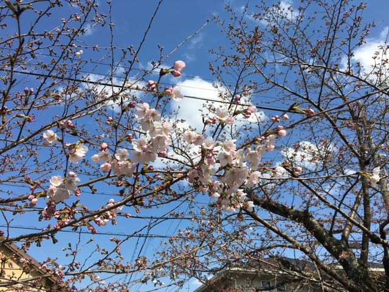
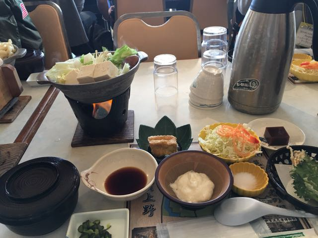

Greetings!
Hello Everyone! It is time for the weekly update of journey in Japan (I know you have been waiting in earnest!). So this week I want to write about some items that I have found interesting about Japan so far. After the list I will talk about how week one went. Well let’s get started!
Everything Is Clean
Japan is so fabulously clean! If you are from the developed world (America, UK, EU countries, etc.) you may think that these places are very clean. Well, you’re wrong! Japan is on another level of cleanliness to the point that any who is clean freak will fall in love with Japan. There is no trash anywhere (and if there is it is VERY minimal), all of the rivers and lakes are incredibly clear (from what I have seen so far), and everything is incredibly organized. This level of cleanliness astounded me.
Convenience to Another Level
A lot of Japanese people are very considerate to the people around them. Because of this societal custom, there are several things that have been enacted to diminish inconveniences. For example, when one would like to use the toilet in the bathroom (トイレ), the stalls are like a “room” (not really but similar). Within the “stall” there is an option to play music, white noise, etc. so that people can’t hear you going to the restroom.
They Have Nice and Different Toilets
These toilets are self-cleaning toilets, or rather, they clean you when you have finished. It sounds weird (I was the last one in the group to like it), but boy they are nice.


Appreciation For Nature
Several people in Japan (well the ones that I have met) really appreciate nature. Back in the states most people don’t. A lot of people stay inside in America and don’t venture out if they don’t have to. In the month of April, A very popular societal custom is Hanami (花見), or cherry blossom viewing. Most people will picnic on under cherry blossom trees and enjoy the beauty that’s around them. There isn’t a custom like this in America.
Fitness
Japanese people are very fit, well they are certainly more fit then Americans. I haven’t seen one overweight person here yet. Most people get to places by walking, bicycling, using the train, or a combination of the three. It is easier to do this since Japan is very compact (the states are very spread out so one has to use their car). It also isn’t uncommon for a person to actually walk (counting steps doesn’t count…. Yes I am looking at you FitBit) at least 3 miles a day.
和食はとても美味しいですね！(Japanese Food Is Very Delicious)
OMG! Japanese food is to die for! Japan is heaven for vegans and vegetarians because they use lots of vegetables, it is very savory (tastes very different than American food), and it is incredibly healthy. Also it is great for people who eat meat. People weren’t kidding when they said that Japanese cuisine is some of the best in the world.
Now let's get on to the week recap! Please go to the next blog post.